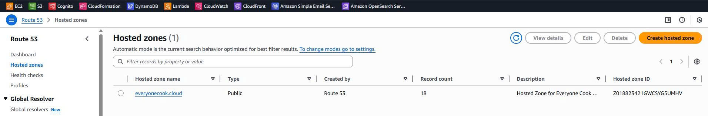

5.4.1 DNS Stack
DNS Stack - Route 53 Hosted Zone
Overview
The DNS Stack is the foundation layer (Phase 1) of the EveryoneCook infrastructure. It manages the Route 53 Hosted Zone for the everyonecook.cloud domain, providing DNS infrastructure that all other stacks depend on.
Deployment Order: This stack MUST be deployed first before any other stacks.
Key Responsibilities
- Create and manage Route 53 Public Hosted Zone
- Export Hosted Zone ID and name for cross-stack references
- Provide nameservers for domain delegation from Hostinger
What This Stack Does NOT Include
- SES Email Identity (managed by Auth Stack - Phase 3)
- DKIM/SPF/DMARC records (managed by Auth Stack - Phase 3)
- ACM Certificates (managed by Certificate Stack - Phase 1.5)
- Application DNS records (managed by respective stacks)
Architecture
┌─────────────────────────────────────────────────────────┐
│ Hostinger Domain │
│ everyonecook.cloud │
│ │
│ ┌────────────────────────────────────────────────┐ │
│ │ Domain Registrar Settings │ │
│ │ • Update Nameservers to Route 53 NS records │ │
│ └────────────────┬───────────────────────────────┘ │
└───────────────────┼──────────────────────────────────────┘
│ DNS Delegation
▼
┌─────────────────────────────────────────────────────────┐
│ AWS Route 53 Hosted Zone │
│ everyonecook.cloud │
│ │
│ Resources Created: │
│ • Public Hosted Zone │
│ • 4 Nameserver (NS) Records │
│ • SOA Record (automatic) │
│ │
│ Exports: │
│ • Hosted Zone ID → Used by Certificate Stack │
│ • Hosted Zone Name → Used by other stacks │
│ • Nameservers → Configure at Hostinger │
└─────────────────────────────────────────────────────────┘
Stack Configuration
File Structure
infrastructure/lib/stacks/
└── dns-stack.ts # DNS Stack implementation
Code Implementation
File: infrastructure/lib/stacks/dns-stack.ts
import * as cdk from 'aws-cdk-lib';
import { Construct } from 'constructs';
import { BaseStack, BaseStackProps } from '../base-stack';
export class DnsStack extends BaseStack {
public readonly hostedZone: cdk.aws_route53.IHostedZone;
constructor(scope: Construct, id: string, props: BaseStackProps) {
super(scope, id, props);
// Add stack-specific tags
cdk.Tags.of(this).add('StackType', 'DNS');
cdk.Tags.of(this).add('Layer', 'Foundation');
cdk.Tags.of(this).add('CostCenter', `DNS-${this.config.environment}`);
// Create Route 53 Hosted Zone
this.hostedZone = this.createHostedZone();
// Export stack outputs
this.exportOutputs();
}
private createHostedZone(): cdk.aws_route53.IHostedZone {
// Extract root domain from environment config
const rootDomain = this.config.domains.frontend
.replace(/^(dev\.|staging\.)/, ''); // everyonecook.cloud
const hostedZone = new cdk.aws_route53.PublicHostedZone(
this,
'HostedZone',
{
zoneName: rootDomain,
comment: `Hosted Zone for Everyone Cook ${this.config.environment} environment`,
}
);
cdk.Tags.of(hostedZone).add('Component', 'DNS');
cdk.Tags.of(hostedZone).add('ManagedBy', 'CDK');
return hostedZone;
}
private exportOutputs(): void {
// Export Hosted Zone ID
new cdk.CfnOutput(this, 'HostedZoneId', {
value: this.hostedZone.hostedZoneId,
exportName: this.exportName('HostedZoneId'),
description: 'Route 53 Hosted Zone ID',
});
// Export Hosted Zone Name
new cdk.CfnOutput(this, 'HostedZoneName', {
value: this.hostedZone.zoneName,
exportName: this.exportName('HostedZoneName'),
description: 'Domain name managed by Route 53',
});
// Export Nameservers (for Hostinger configuration)
new cdk.CfnOutput(this, 'NameServers', {
value: cdk.Fn.join(', ', this.hostedZone.hostedZoneNameServers || []),
description: '⚠️ Update these nameservers at Hostinger',
});
}
}
Key Configuration Details
1. Domain Extraction Logic
The stack automatically extracts the root domain from the environment configuration:
// Environment config: dev.everyonecook.cloud
// Extracted domain: everyonecook.cloud
const rootDomain = this.config.domains.frontend.replace(/^(dev\.|staging\.)/, '');
Environments:
- Dev:
dev.everyonecook.cloud→ Hosted Zone:everyonecook.cloud - Staging:
staging.everyonecook.cloud→ Hosted Zone:everyonecook.cloud - Prod:
everyonecook.cloud→ Hosted Zone:everyonecook.cloud
2. Resource Naming Convention
All resources follow a consistent naming pattern:
// Resource name format: everyonecook-{env}-{resource}
protected resourceName(name: string): string {
return `everyonecook-${this.config.environment}-${name}`;
}
// Export name format: EveryoneCook-{Env}-{Export}
protected exportName(name: string): string {
return `EveryoneCook-${this.config.environment}-${name}`;
}
Example:
- Stack name:
EveryoneCook-dev-DNS - Export:
EveryoneCook-dev-HostedZoneId
3. Resource Tags
Every resource is tagged for cost tracking and management:
{
Stack: 'EveryoneCook-dev-DNS',
Environment: 'dev',
StackType: 'DNS',
Layer: 'Foundation',
CostCenter: 'DNS-dev',
Component: 'DNS',
ManagedBy: 'CDK',
Project: 'EveryoneCook'
}
Stack Outputs
After deployment, the stack exports the following values:
| Output Name | Value | Usage |
|---|---|---|
HostedZoneId |
Z0123456789ABCDEFGHIJ |
Used by Certificate Stack for DNS validation |
HostedZoneName |
everyonecook.cloud |
Used by other stacks to create DNS records |
NameServers |
ns-1.awsdns-01.com, ns-2.awsdns-02.org, ... |
Configure at Hostinger for DNS delegation |
Deployment Steps
Step 1: Review Configuration
Navigate to the infrastructure directory:
cd D:\Project_AWS\everyonecook\infrastructure
Verify the environment configuration in config/environment.ts:
dev: {
environment: 'dev',
account: 'YOUR_AWS_ACCOUNT_ID',
region: 'ap-southeast-1',
domains: {
frontend: 'dev.everyonecook.cloud',
api: 'api-dev.everyonecook.cloud',
cdn: 'cdn-dev.everyonecook.cloud',
},
// ... other configs
}
Step 2: Deploy DNS Stack
Deploy the DNS stack to AWS:
# Deploy DNS Stack only
npx cdk deploy EveryoneCook-dev-DNS --context environment=dev
Expected output:
✨ Synthesis time: 5.23s
EveryoneCook-dev-DNS: deploying...
EveryoneCook-dev-DNS: creating CloudFormation changeset...
✅ EveryoneCook-dev-DNS
✨ Deployment time: 45.67s
Outputs:
EveryoneCook-dev-DNS.HostedZoneId = Z0123456789ABCDEFGHIJ
EveryoneCook-dev-DNS.HostedZoneName = everyonecook.cloud
EveryoneCook-dev-DNS.NameServers = ns-123.awsdns-45.com, ns-678.awsdns-90.net,
ns-1234.awsdns-56.org, ns-5678.awsdns-01.co.uk
Stack ARN:
arn:aws:cloudformation:ap-southeast-1:123456789012:stack/EveryoneCook-dev-DNS/...
Step 3: Verify in AWS Console
- Navigate to Route 53 in the AWS Console
- Go to Hosted zones
- Verify the hosted zone
everyonecook.cloudis created
Expected view:
- Domain name:
everyonecook.cloud - Type: Public hosted zone
- Records: 2 (NS and SOA records - automatically created)
 Route 53 Hosted Zone showing domain details, NS records (4 nameservers), and SOA record
Step 4: Copy Nameservers
From the CloudFormation Outputs or Route 53 console, copy all 4 nameserver records:
ns-123.awsdns-45.com
ns-678.awsdns-90.net
ns-1234.awsdns-56.org
ns-5678.awsdns-01.co.uk
 Location of nameserver records in Route 53 console
Location of nameserver records in Route 53 console
Hostinger Configuration
Critical Post-Deployment Step
⚠️ IMPORTANT: After deploying the DNS Stack, you MUST update nameservers at Hostinger to delegate DNS management to Route 53.
Update Nameservers at Hostinger
-
Login to Hostinger hPanel
- Navigate to https://hpanel.hostinger.com
- Login with your Hostinger credentials
-
Access Domain Management
- Go to Domains section
- Select
everyonecook.clouddomain
-
Change Nameservers
- Click on DNS/Nameservers
- Select Change nameservers
- Choose Custom nameservers
-
Enter Route 53 Nameservers
- Nameserver 1:
ns-123.awsdns-45.com - Nameserver 2:
ns-678.awsdns-90.net - Nameserver 3:
ns-1234.awsdns-56.org - Nameserver 4:
ns-5678.awsdns-01.co.uk
- Nameserver 1:
-
Save Configuration
- Click Change nameservers button
- Wait for confirmation
 Hostinger hPanel showing custom nameservers configuration with Route 53 NS records
Hostinger hPanel showing custom nameservers configuration with Route 53 NS records
Propagation Time
- Initial propagation: 15-30 minutes
- Full global propagation: Up to 48 hours (typically within 2-4 hours)
Verify DNS Delegation
After updating nameservers, verify the delegation:
# Check nameservers for the domain
nslookup -type=NS everyonecook.cloud
# Or using dig (if available)
dig NS everyonecook.cloud
Expected output:
everyonecook.cloud nameserver = ns-123.awsdns-45.com
everyonecook.cloud nameserver = ns-678.awsdns-90.net
everyonecook.cloud nameserver = ns-1234.awsdns-56.org
everyonecook.cloud nameserver = ns-5678.awsdns-01.co.uk
Cost Breakdown
Monthly Costs
| Resource | Cost | Notes |
|---|---|---|
| Route 53 Hosted Zone | $0.50/month | Fixed cost per hosted zone |
| DNS Queries | $0.40 per million queries | First 1 billion queries/month |
| Total (Estimated) | ~$0.50-1.00/month | Very low traffic in dev environment |
Cost Optimization Notes
- ✅ Single hosted zone for all environments (dev, staging, prod)
- ✅ Use subdomain prefixes to distinguish environments
- ✅ No additional cost for NS, SOA, or other DNS records
- ✅ Pay-per-query pricing is very cost-effective for low-medium traffic
Cross-Stack Dependencies
Exports Used By Other Stacks
The DNS Stack exports values that are imported by:
-
Certificate Stack (Phase 1.5)
- Imports:
HostedZoneId - Purpose: Create DNS validation records for ACM certificates
- Imports:
-
Core Stack (Phase 2)
- Imports:
HostedZoneId,HostedZoneName - Purpose: Create CloudFront A/AAAA alias records
- Imports:
-
Backend Stack (Phase 4)
- Imports:
HostedZoneId - Purpose: Create API Gateway custom domain DNS records
- Imports:
Dependency Flow
DNS Stack (Route 53)
│
├─► Certificate Stack (ACM certificates)
│
├─► Core Stack (CloudFront DNS records)
│
└─► Backend Stack (API Gateway DNS records)
Validation Checklist
Before proceeding to Certificate Stack deployment:
- DNS Stack successfully deployed to AWS
- Route 53 Hosted Zone visible in AWS Console
- 4 nameserver records obtained from stack outputs
- Nameservers updated at Hostinger hPanel
- DNS delegation verified with
nslookupordig - Stack exports visible in CloudFormation console
- Tags applied correctly to all resources
Next Steps
After successfully deploying and configuring the DNS Stack:
➡️ 5.4.2 Certificate Stack - Create ACM certificates with DNS validation
The Certificate Stack will:
- Create ACM certificate for CloudFront (
cdn.everyonecook.cloud) - Create wildcard ACM certificate for API Gateway (
*.everyonecook.cloud) - Automatically create DNS validation records in Route 53
- Must be deployed to us-east-1 region (CloudFront requirement)
References
- Source Code:
infrastructure/lib/stacks/dns-stack.ts - Base Stack:
infrastructure/lib/base-stack.ts - Environment Config:
infrastructure/config/environment.ts - AWS Documentation: Route 53 Hosted Zones
- Hostinger Guide: How to Change Nameservers